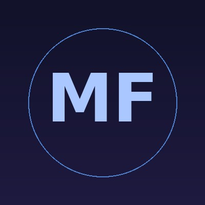

E-Portfolio 2 · PPG Prajabatan 2026
Merumuskan prinsip dan nilai sebagai guru—sebuah refleksi akhir dari perjalanan PPL Terbimbing di SMK Negeri 10 Makassar.
01 · Refleksi Akhir
Analisis mendalam atas pengalaman, tantangan, dan umpan balik yang membentuk perjalanan saya sebagai calon guru profesional.
PPL Terbimbing mengubah cara saya memandang profesi guru secara mendasar. Jika sebelumnya saya membayangkan mengajar sebagai aktivitas menyampaikan informasi, kini saya memahaminya sebagai proses merancang pengalaman belajar yang bermakna. Dari siklus pertama hingga ketiga, saya belajar bahwa perangkat pembelajaran yang baik bukan sekadar dokumen administratif—ia adalah peta yang menuntun setiap siswa menuju pemahaman.
Saya juga belajar tentang pentingnya membaca ruang kelas: mengenali kapan siswa mulai kehilangan fokus, kapan penjelasan perlu diulang dengan analogi berbeda, dan kapan memberi ruang diam agar mereka memproses sendiri. Keterampilan ini tidak datang dari teori semata, melainkan dari ratusan menit berdiri di depan kelas dan mengamati reaksi nyata siswa. Setiap siklus memberikan lapisan pembelajaran baru—dari pengelolaan waktu, diferensiasi instruksi, hingga cara memberikan umpan balik yang memotivasi, bukan mematahkan semangat.
Pelajaran yang paling berharga adalah bahwa ketidaksempurnaan adalah bagian dari proses. Setiap pertemuan yang tidak berjalan sesuai rencana adalah data berharga untuk siklus berikutnya. PPL Terbimbing mengajarkan saya untuk menjadi praktisi reflektif—seseorang yang terus mempertanyakan dan memperbaiki praktiknya sendiri.
Tantangan paling signifikan yang saya hadapi adalah heterogenitas kemampuan awal siswa. Dalam satu kelas yang sama, terdapat siswa yang telah familiar dengan konsep informatika dasar melalui eksplorasi mandiri, sementara sebagian lainnya belum pernah berinteraksi secara mendalam dengan perangkat digital di luar penggunaan media sosial. Kondisi ini menciptakan jurang pemahaman yang menyulitkan jika saya hanya menggunakan satu pendekatan instruksional.
Solusi yang saya kembangkan adalah menerapkan pembelajaran berdiferensiasi secara bertahap. Pada siklus kedua, saya mulai merancang LKPD dengan tiga level kesulitan—eksplorasi dasar, penerapan, dan pengembangan—sehingga setiap siswa memiliki titik masuk yang sesuai. Saya juga memanfaatkan strategi peer-learning: siswa dengan pemahaman lebih tinggi diundang menjadi "mentor sebaya" dalam kelompok, yang ternyata justru memperdalam pemahaman mereka sendiri.
Tantangan kedua adalah manajemen waktu dalam sesi praktik. Kegiatan berbasis praktik kerap melebihi alokasi waktu yang direncanakan. Solusinya adalah membangun rutinitas yang jelas di awal kelas: penanda waktu visual di papan tulis, instruksi bertahap yang tertulis, dan sinyal transisi yang konsisten. Setelah dua siklus, siswa mulai menginternalisasi ritme kelas dan transisi antar kegiatan menjadi lebih efisien.
Guru Pamong, Drs. H. Rusdi Palemmai, M.Pd., memberikan catatan yang sangat berharga: saya perlu memperkuat fase apersepsi. Beliau mengamati bahwa pembukaan pembelajaran saya kadang terlalu cepat berpindah ke inti materi tanpa cukup membangun koneksi antara pengetahuan awal siswa dengan konsep baru yang akan dipelajari. Saran beliau adalah menyediakan minimal 5–7 menit untuk pertanyaan pemantik yang benar-benar membangkitkan rasa ingin tahu.
Umpan balik ini melengkapi dan akan menjadi fokus pengembangan utama di PPL Mandiri: merancang pembukaan pembelajaran yang lebih kuat secara konseptual, dan membangun sistem pencatatan asesmen formatif yang ringkas namun informatif. Saya berencana mengembangkan lembar observasi singkat yang dapat diisi selama aktivitas kelas berlangsung tanpa mengganggu ritme pembelajaran.
02 · Filosofi Mengajar
Ideologi yang mendasari setiap keputusan instruksional saya selama proses pembelajaran terbimbing.
Filosofi mengajar saya berakar pada keyakinan bahwa setiap siswa adalah subjek aktif dalam proses konstruksi pengetahuannya sendiri. Pandangan ini sejalan dengan gagasan konstruktivisme Piaget yang menyatakan bahwa pengetahuan tidak dapat ditransfer begitu saja dari guru ke siswa—ia harus dibangun melalui pengalaman, eksplorasi, dan refleksi. Konsekuensinya, saya memandang peran guru bukan sebagai "sumber kebenaran" yang menuangkan informasi, melainkan sebagai perancang lingkungan belajar yang memungkinkan siswa menemukan pemahaman secara autentik. Di ruang kelas informatika, ini berarti merancang situasi belajar di mana siswa menghadapi masalah nyata, bereksperimen dengan solusi, dan belajar dari kegagalan mereka sendiri.
Vygotsky mengajarkan saya tentang Zone of Proximal Development—zona di antara apa yang dapat dilakukan siswa secara mandiri dan apa yang dapat mereka capai dengan bimbingan yang tepat. Filosofi ini mendorong saya untuk selalu mengkalibrasi tantangan: terlalu mudah akan membosankan, terlalu sulit akan melemahkan kepercayaan diri. Saya percaya bahwa tugas utama seorang guru adalah terus-menerus membangun jembatan scaffolding yang membantu siswa melintasi zona tersebut—melalui pertanyaan yang mengarahkan, contoh yang kontekstual, dan ruang yang aman untuk mencoba. Ketika scaffolding bekerja dengan baik, siswa tidak menyadari bahwa mereka telah melakukan sesuatu yang sebelumnya tampak mustahil.
Saya juga menemukan resonansi mendalam dalam pemikiran Paulo Freire yang mengkritik "pendidikan gaya bank"—model di mana siswa diperlakukan sebagai wadah kosong yang diisi oleh guru. Freire mendorong pendidikan dialogis: guru dan siswa sama-sama belajar dalam proses yang saling membangun. Dalam konteks SMK, filosofi ini memiliki makna konkret: pengalaman dan intuisi teknis siswa harus dihargai sebagai pengetahuan yang valid. Seorang siswa yang di rumah sudah terbiasa memperbaiki perangkat keras memiliki pengetahuan prosedural yang berharga—tugas saya adalah mengaitkannya dengan kerangka konseptual yang lebih luas, bukan mengabaikannya demi mengikuti urutan kurikulum yang kaku.
Pada akhirnya, filosofi mengajar saya adalah tentang kepercayaan. Kepercayaan bahwa setiap siswa yang duduk di depan saya menyimpan potensi yang belum sepenuhnya terlihat—bahkan oleh dirinya sendiri. Kepercayaan bahwa iklim kelas yang aman secara psikologis, di mana pertanyaan "bodoh" tidak ada dan kesalahan dipandang sebagai langkah menuju pemahaman, adalah prasyarat utama belajar yang bermakna. John Dewey menulis bahwa pendidikan bukan persiapan untuk kehidupan—ia adalah kehidupan itu sendiri. Saya ingin setiap jam pelajaran yang saya pimpin menjadi pengalaman hidup yang meninggalkan bekas: rasa ingin tahu yang terpicu, kepercayaan diri yang tumbuh, atau sebuah koneksi antara dunia kelas dan dunia di luar tembok sekolah.
"Mengajar adalah tindakan kepercayaan—kepercayaan bahwa setiap siswa menyimpan kemampuan yang belum pernah terlihat bahkan oleh dirinya sendiri, dan tugas kita adalah menciptakan ruang di mana kemampuan itu akhirnya menemukan jalannya."